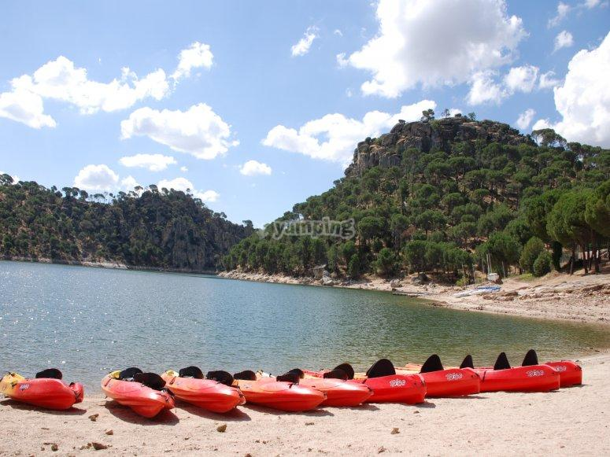

La bandera azul luce en el principal arenal del embalse junto a San Martín de Valdeiglesias, un refrescante lugar de ocio para los madrileños en verano, apto para el baño y los deportes náuticos y a tan sólo 75 km de la capital Desde 1955, los madrileños pueden disfrutar de la playa sin recorrer largas distancias ni salir de la región. Han pasado seis décadas desde que el embalse de San Juan fue construido a 75 km de la capital para abastecer de agua y electricidad el suroeste de la Comunidad de Madrid, y, a su vez, convertirse en un importante reclamo turístico. Situada entre los términos municipales de San Martín de Valdeiglesias, El Tiemblo, Cebreros y Pelayos de la Presa, la extensa masa de agua de 650 hectáreas está formada por el río Alberche, afluente del Tajo, y es la única de la Comunidad en la que están permitidos el baño y las actividades acuáticas a motor.
